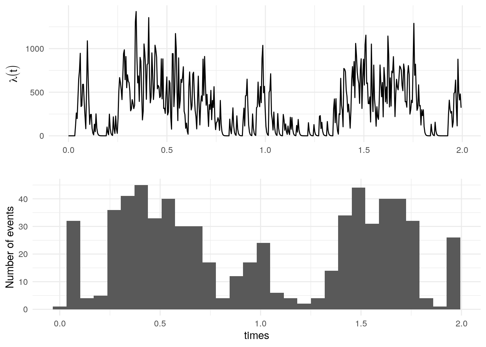
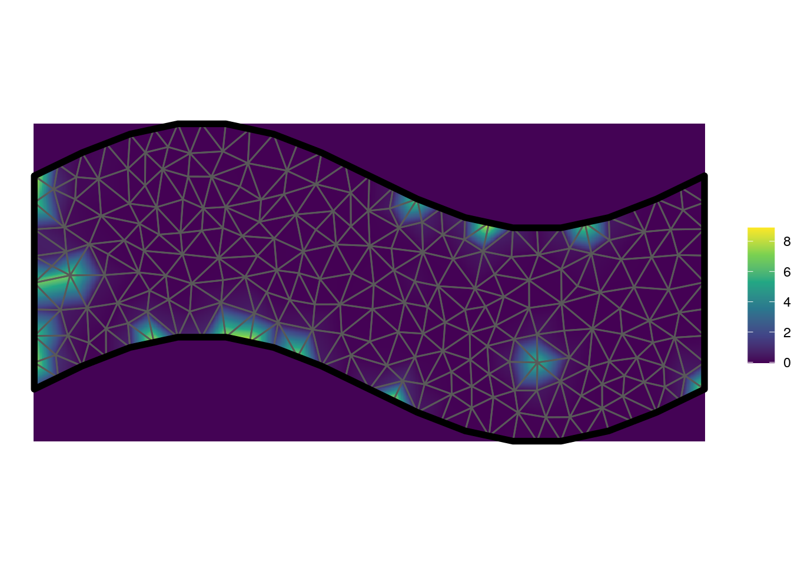
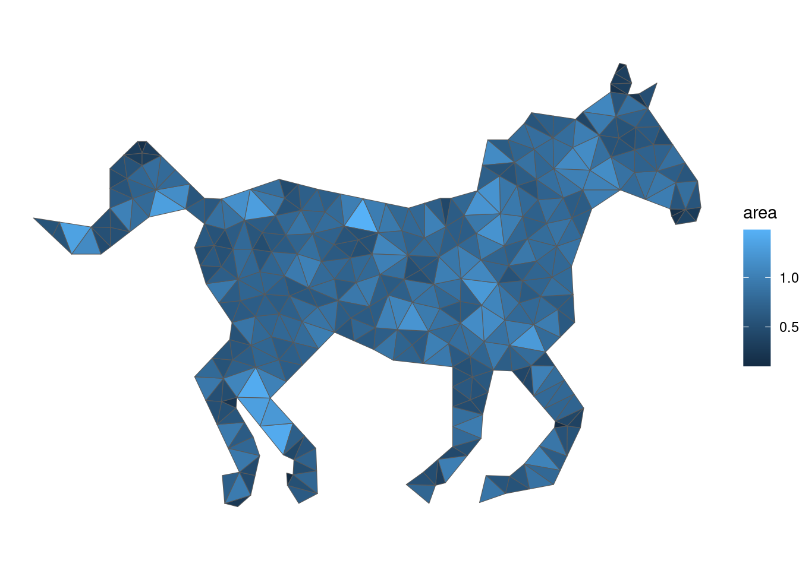
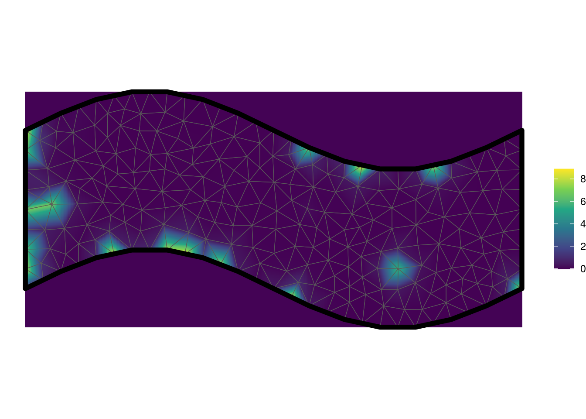

Chapter 6 Spatiotemporal self-exciting models
Although the Hawkes process is traditionally formulated as a temporal point process, it is also possible to formulate a spatiotemporal version of the Hawkes process.
For the spatiotemporal Hawkes processes fitted by this package, temporal self-excitement follows an exponential decay function. The self-excitement over space follows a Gaussian distribution centered at the triggering event. There are two formulations of this model. The default is that the Gaussian function has a fixed covariance matrix, independent of time. Alternatively, covariance can be directly proportional to time, meaning that the self-excitement radiates out from the center over time. This can be appropriate when the mechanism causing self-excitement travels at a finite speed, but is very memory-intensive.
The intensity function used by stelfi is
\[\lambda(s,t) = \mu + \alpha \Sigma_{i:\tau_i<t}(\text{exp}(-\beta * (t-\tau_i)) G_i(s-x_i, t - \tau_i)).\]
Here \(\mu\) is the background rate, \(\beta\) is the rate of temporal decay, \(\alpha\) is the increase in intensity after an event, \(\tau_i\) are the event times, \(x_i\) are the event locations (in 2D Euclidean space) and \(G_i(s-x_i, t - \tau_i)\) is the spatial self-excitement kernel.
For the version with time-independent spatial excitement: \(G_i(s-x_i, t - \tau_i) = f_X(s - x_i)\) where \(f_X\) is the density function of \(X \sim \text{N}(0, \Sigma)\)
For the version with time-dependent spatial excitement: \(G_i(s-x_i, t - \tau_i) = f_X(s - x_i)\) where \(f_X\) is the density function of \(X \sim \text{N}(0, (t-\tau_i)\Sigma)\)
6.1 The fit_stelfi() function
## function (times, locs, sf, smesh, parameters, covariates, GMRF = FALSE,
## time_independent = TRUE, tmb_silent = TRUE, nlminb_silent = TRUE,
## ...)
## NULL6.1.1 Spatiotemporal Hawkes process
data(xyt, package = "stelfi")
locs <- data.frame(x = xyt$x, y = xyt$y)
times <- xyt$t
domain <- sf::st_as_sf(xyt$window)ggplot(data = locs, aes(x = x, y = y, size = times)) +
geom_point() +
geom_sf(data = domain, fill = NA, inherit.aes = FALSE) +
theme_void()
bnd <- INLA::inla.mesh.segment(as.matrix(sf::st_coordinates(domain)[, 1:2]))
smesh <- INLA::inla.mesh.2d(boundary = bnd,
max.edge = 0.75, cutoff = 0.3)
param <- list(mu = 1, alpha = 3, beta = 6, xsigma = 0.2,
ysigma = 0.2, rho = 0)
fit <- fit_stelfi(times = times, locs = locs, sf = domain, smesh = smesh, parameters = param)
get_coefs(fit)## Estimate Std. Error
## mu 0.31682408 0.06432051
## coefs -1.14940861 0.20301649
## alpha 232.98697937 14.47443211
## beta 232.98698056 14.47443202
## xsigma 0.55456406 0.02336852
## ysigma 0.28344566 0.01440343
## rho 0.02843629 0.05804435
6.1.2 Including a random field
## Note: just because you can, doesn't mean you should...
param <- list(mu = 1, alpha = 20, beta = 200, kappa = 2, tau = 0.1, xsigma = 0.2, ysigma = 0.2, rho = 0)
fit <- fit_stelfi(times = times, locs = locs, sf = domain, smesh = smesh, parameters = param, GMRF = TRUE)
get_coefs(fit)## Estimate Std. Error
## mu 0.003432009 0.004005054
## coefs -5.674609405 1.166970622
## alpha 259.064098445 15.626830249
## beta 259.064100335 15.626830029
## xsigma 0.548451292 0.021614775
## ysigma 0.296733579 0.014288649
## rho 0.024276592 0.056616125
## kappa 9.040965870 10.519143632
## tau 0.004644277 0.009560608
get_fields(fit, smesh) |>
show_field(smesh = smesh) +
geom_sf(data = mesh_2_sf(smesh), fill = NA) +
geom_sf(data = domain, fill = NA, col = "black", lwd = 2) +
theme_void()